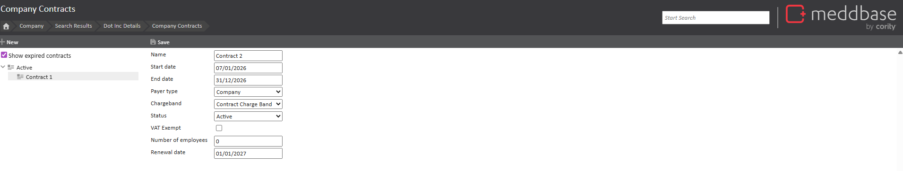
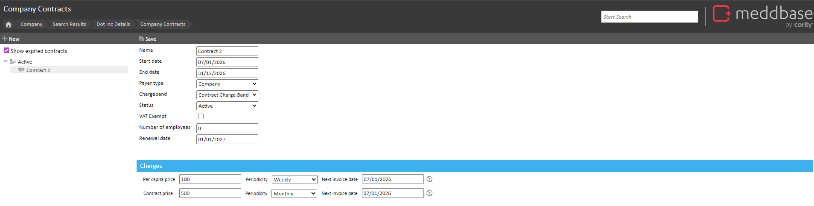
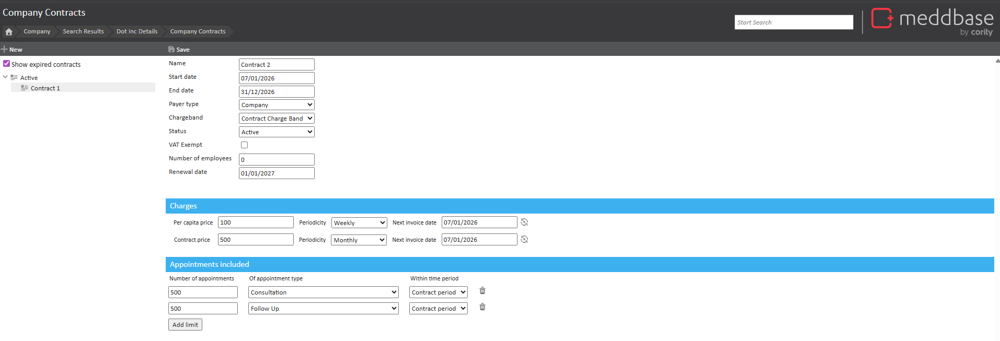
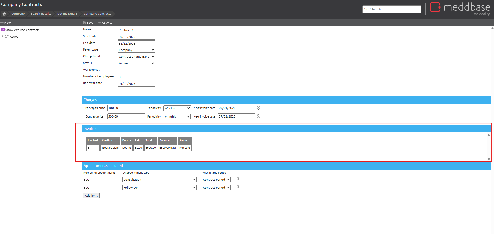
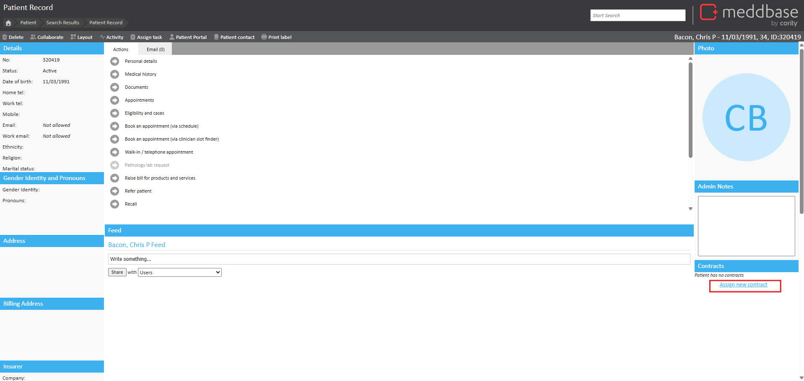
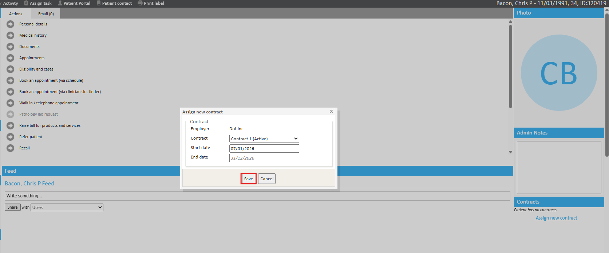
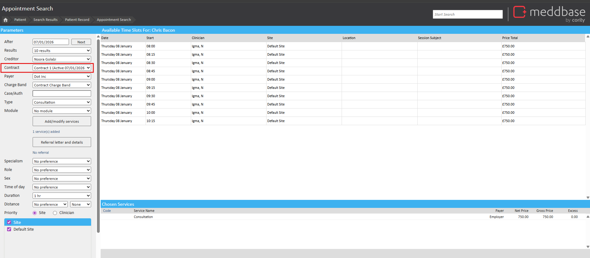

When a company or service provider has multiple customers or organizations with patients, they can form a relationship with a contract. Setting up a contract can help capture and maintain contractual data, manage eligibility, administer contract pricing and invoicing, and establish service limits. You can have multiple contracts associated to a company and a multiple patients associated to different contracts. A contract is attached to a single charge band.
To enable Contract Management in your Chamber, please contact support or your account manager.
Find and select a company for which to create a contract.
Click Contracts.
Click New.
Enter the following details:

Contract name - Enter a name for the contract.
Start and End date - Determines the length of the contract.
Payer type - Choose from the available contract payer types. The list of payer types is configured in the Common Catalogue.
Charge band - Choose the charge band to associated the contract to. The charge band must be of the Contract Only type.
Status - Choose the contract status. The status options can be configured in the Common Catalogue.
VAT exemption - Choose whether the contract is VAT exempted.
Number of employees (Optional) - The number of employees under the contract.
Renewal date - The date the contract will renew. Typically, this will be the day after the End Date.
Require card details - Choose whether card details are required for patients assigned to the contract.
Configure contract specific pricing and invoices:

Enter a Per Capita Price.
Enter a Contract Price.
Choose a frequency in which to generate an invoice.
Optionally, manually enter the next invoice date.
Add any appointment limits for the contract:

Enter the number of appointments available for booking on the contract. The total applies to all patients assigned to the contract.
Choose the Appointment Type.
Choose a time period the service is available for.
Click Save.
The contract is automatically saved against the company.
When saved, an invoice is generated automatically. The invoice includes all the charges related to that contract. All invoices raised for the contract appear in the Invoices section. Invoices behave like other invoices in Meddbase.

Assigning a contract to a patient
Once a contract has been created, you can assign it to a patient.
Find and select a patient to assign to a contract.
From the Patient Record, click Assign new contract.

Choose a contract to assign the patient.
Enter a start date. The end date will automatically set to the end date of the contract.
Click Save.

Multiple contracts can be assigned to a patient. The contracts assigned to the patient are listed on the patient record, under Contracts.
Booking an appointment using a contract
When a contract has been set up for a company, you can book an appointment using a contract assigned to a the patient. In order for contracts to appear, the patient needs to be an employee of the employer company and have a valid contract assigned on their patient record.
Find and select a patient to book an appointment for and choose a method for booking an appointment. This example will use the Slot Finder.
In the Parameters, use the Contract drop-down list to choose a contract.

Complete the booking process as usual.
When a contract is selected, the services added to be provided on that contract will update in the booking page.